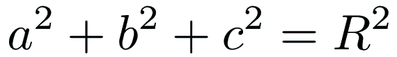
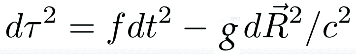

EM invariants
To derive the field equations of electromagnetism (EM), we need to find Lorentz invariants that use the electric (E) and magnetic (B) fields of EM that then get plugged into the Euler-Lagrange equation.
An invariant is something all observers can agree on. The Egyptions fiture out one long ago:
This was the basis for surveying in the flood plains of the Nile. It remains true today. The 3D Egyptions know we could also include a third spacial dimension:

Einstein showed that Egyptions in rockets could only agree on the inverval between events.
Accelerating or spinning is alright for observing events is you can figure out the right sort of functions to put into the interval.

Masters of general relativity can figure out the dynamic functions for f and g in only a few special cases because the math remains so difficult. The proposal described in this site, quaternion gravity, should make this issue tractable since then one has an algebra problem instead of ten nonliner differential equations to solve. For the rest of the discussion of EM, it is assumed f and g are equal to one since it makes the math simple.
The first term of a quaternion product is a Lorentz invariant scalar. Couple the current with the potential by multiplying them together:

The electric and magentic fields can be written in terms of differential operators acting on a potential. Form the product:
The first term is a gauge term. EM has gauge symmetry. Set this to zero in a way that assures that no matter what gauge we pick - terms involving the time derivative of phi or divergence of A - the other terms are unchanged.
There are two times of 3-vectors. An axial vector will not change if the the order of the product is reverse. A polar vector will flip signs by changing the order. That is a property of cross products and curls. Here are the two possibilities:
These should both be as "long" as each other, but will point in a different direction so long as the magnetic field B is not zero. Zero is an invariant, so take the difference of the norms of both of these, and that will always, necssarily, be equal to zero.
The dot product of the electric and magnetic field will be used to derive the homogenous Maxwell equations, the no monopoles and Faraday's law.
The product of the two ways to multiply a differential and a potential also form an invariant:
This Lorentz invariant quantity will be used when deriving the Maxwell source equations, Gauss' and Ampere's laws.